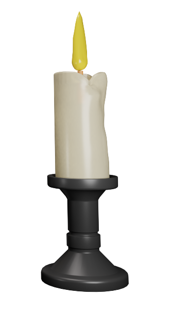

Online Halloween
a Kőbányai Könyvtárban
Halloween alkalmából egy interaktív weboldallal készültünk nektek. Találtok rajta online memóriajátékot, hagyományos (nyomtatható) társasjátékot, hasznos információkat az ünnephez kapcsolódóan, illetve könyvajánlókat kicsiknek és nagyoknak.
Memóriajáték


Mi micsoda?

Halloween
Október 31.
A ma ismert ünnep kelta hagyományokból alakult ki: egyben a tél beköszöntét jelentette. A mai Írország területén az 5. században (a későbbi szent) Patrik missziós tevékenysége idején integrálódott a keresztény hagyománykörbe All Hallows' Eve, mindenszentek éjszakája néven. Legelterjedtebbé az angolszász országokban vált halloween névalakban.

Mindenszentek
November 1.
A mindenszentek napja az üdvözült lelkek emléknapja, főünnep melyet a keresztény világ november 1-jén ünnepel. III. Gergely pápa idején 741-ben jelent meg először a megemlékezés napjaként. Láthatóan van összefüggés a halloween és a mindenszentek között, de előbbi az utóbbi "előestéje", sajátos hagyományokkal, szokásokkal.

Halottak napja
Halottak napja
November 2.
A halottak napja keresztény ünnep az üdvösséget még el nem nyert, a tisztítótűzben lévő elhunyt hívekért. Az ünnep az ókori Róma idején a holtak tiszteletének ünnepe volt. Magyarországon a halottak napja fokozatosan vált az elhunyt szeretteinkről való általános - felekezetektől független - megemlékezés napjává.
A töklámpás
legendája
Egy ír legenda szerint nevét egy Jack O'Lantern nevű részeges kovácsról kapta.
Egy szép napon odament a részeges Jackhez az ördög és hívta a pokolba, de előtte felajánlotta,
hogy igyanak még meg egy italt. Jack azonban nem akart vele tartani, ezért hát furfangos
cselt eszelt ki. Ravasz módon megkérte, hogy válasszon egy almát az almafájáról,
mire az ördög felmászott a fára. Jack tudta, hogy mitől fél az ördög, ezért a fa oldalára
egy keresztet rajzolt. Az ördög nagyon megrettent a kereszttől és nem is mert lemászni,
kénytelen volt a fa ágán kucorogni. Az ördög addig-addig egyezkedett a furfangos kováccsal,
míg az megígértette vele, hogy ha leengedi a fáról, cserébe gondoskodik róla,
hogy Jack (aki életében sok rosszat tett) ne kerüljön a pokolba. Jack ekkor megengedte
hogy lemásszon a fáról az ördög - aki abban a pillanatban el is tűnt. Azonban,
amikor Jack meghalt, lelke a menny és a pokol között rekedt: a mennybe nem engedték be,
mivel élete során sokat részegeskedett és bűnös módon élt, de az ördög sem akarta a
pokolba befogadni, mert nagyon haragudott Jackre a régi csínye miatt.
Jack arra kérte az ördögöt, hogy legalább egy kis fényt adjon neki, hogy megtalálja a
visszautat az élők világába. Végül az ördög megszánta és egy örökké izzó fadarabot dobott
Jacknek a pokol katlana alatt lobogó tűz parazsából, amit nyugtalan lelkének szánt.
Az izzó parazsat Jack egy kivájt takarmányrépa (rutabaga, svéd karórépa) belsejébe tette
világító lámpásnak, s azóta lelke ennek a takarmányrépa-lámpácskának a
fényénél keresi megnyugvását.
A legenda sok egyéb változata is létezik az angolszász nyelvterületen, köztük Fukar Jack
(Stingy Jack) története is, az öreg részeges kovácsról, aki szeretett mindenkit megtréfálni,
de egyszer eladta a lelkét az ördögnek.
A legenda egy másik ismert változata szerint amikor az ördög el akarta vinni a pokolba a
részeges kovácsot, Jack csele az volt, hogy meggyőzte az ördögöt, hogy változtassa magát
pénzérmévé, mellyel fizetheti az italukat a kocsmában. Az ördög úgy is tett, Jack azonban
a pénzt zsebre tette egy ezüst kereszt mellé, mely megakadályozta, hogy az ördög
visszaváltozzon eredeti alakjába.
Az ír néphagyományt követő Amerikában a legendában eredetileg szereplő takarmányrépát a
narancssárga színű, Amerikában őshonos, látványosabb, könnyen vigyorgósra kivájható sütőtök
növény váltotta fel.

Könyvajánló
felnőtteknek
Könyvajánló
gyerekeknek
Halloweeni
Társasjáték
Nyomtassátok ki, és játsszatok a saját tervezésű társasjátékunkkal.
Izgalmas pálya, melyben az első célbaérő még nem feltétlenül lesz győztes!